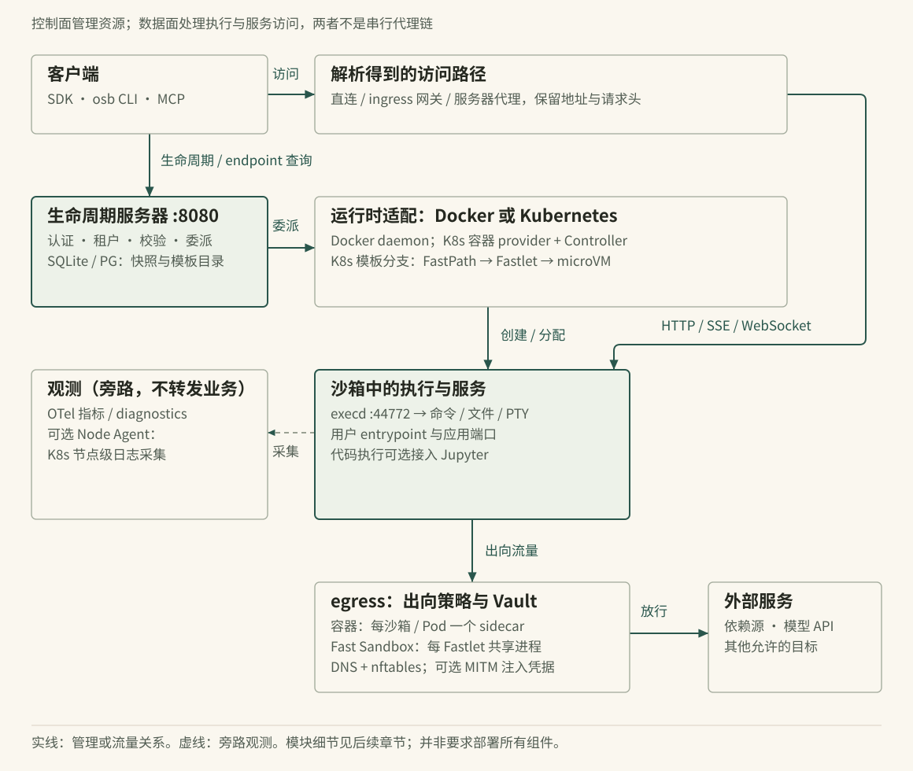
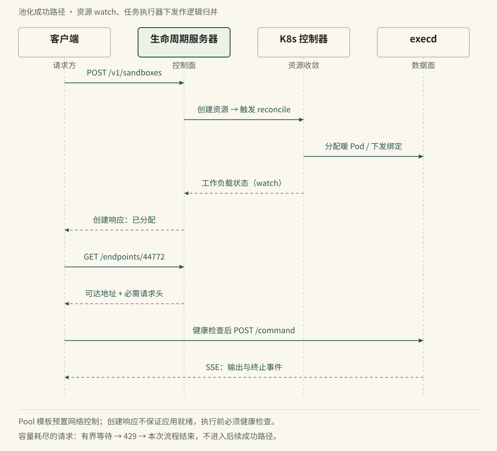

技术方案：一条契约、三种后端、两个平面
把上篇的六条需求塞进同一套代码库，第一步是决定在哪里画界线。如果把命令执行、文件传输和容器调度全揉进一个中心服务，控制面重启就会掐断所有正在跑的测试流；如果给 Docker、Kubernetes 和 Firecracker 各写一套独立 API，本地调试到线上集群的迁移成本就会失控。
OpenSandbox 给出的结构解法很凝练：对外一条契约，对内三种后端，横向切成两个平面。
四份 OpenAPI 契约分给三类进程
specs/ 目录下的四份 OpenAPI 文件是公开行为的唯一来源，AGENTS.md 明确要求 SDK 生成物必须从契约源头重新生成，不得手改补丁：
| 契约文件 | 当前体量（v1.3.0-rc.2） | 承担职责 | 实现进程 |
|---|---|---|---|
specs/sandbox-lifecycle.yml |
约 124 KB（3349 行） | 沙箱创建、查询、删除、续期、endpoint、暂停/恢复、快照、模板、网络策略 | 生命周期服务器（:8080） |
specs/execd-api.yaml |
约 119 KB（3475 行） | 命令执行、Shell 会话、文件与目录、代码上下文、指标、隔离会话 | execd（:44772） |
specs/egress-api.yaml |
约 29 KB（827 行） | 出向策略热更新、Credential Vault 与动态凭据交换 | egress（:18080） |
specs/diagnostic-api.yml |
约 16 KB（434 行） | 诊断路由上下文、带 scope 的日志与事件描述符 |
生命周期服务器（:8080） |
三类进程之间没有耦合在一起的内部 RPC 链路。客户端先向控制面申请沙箱并查询 endpoint，拿到可达地址和必需请求头后，直接连向数据面的 execd 或 egress。代价是客户端要同时理解三个默认端口和各自的鉴权头；收益是故障域彻底分开，控制面升级或重启不会打断沙箱内正在推流的命令。
两个配置值装下三种运行时后端
服务端配置文件里的 runtime.type 只有两个合法取值：docker 和 kubernetes。第三种后端 Fast Sandbox 并没有另立一个新的 runtime.type，而是挂载在 kubernetes 下的组合分支：
runtime.type = "docker"
└── DockerSandboxService 直连本地 Docker daemon
runtime.type = "kubernetes"
└── CompositeSandboxService
├── KubernetesSandboxService 容器负载：BatchSandbox 或 agent-sandbox
└── FastSandboxService 模板负载：FastPath gRPC -> Fastlet -> Firecracker microVM分流规则在 server/opensandbox_server/services/composite_service.py 里写得直白：创建阶段看请求来源，带 templateId 或引用了 fsb 后端快照的请求进 FastSandboxService，其余进 KubernetesSandboxService；沙箱建好之后，凡是 ID 以 fsb- 开头的全部分发给模板分支，其余归容器分支。没有额外映射表，前缀本身就是路由器。
两个平面的硬分工
架构文档把全站流量画成三条路径：生命周期管理、执行与服务访问、出向控制。落到进程职责上只有一条红线：控制面不碰沙箱内部，数据面不碰沙箱账本。
- 控制面只负责认证、租户解析、请求校验、持久化自己拥有的目录数据（快照元数据与模板定义），然后把工作负载动作委派给对应后端。容器、Pod 与 CRD 才是沙箱本身的状态真相，控制面数据库里不存沙箱表。
- 数据面把命令执行、文件读写、PTY、Jupyter 内核、资源指标和出向网络拦截全部留在沙箱内或紧邻沙箱的代理进程里。控制面自带的
/sandboxes/{id}/proxy/{port}在1.2.1起已明确转入维护模式，仅作直连与网关都不可达时的兼容退路。
图 1 把四个交互维度拆开来画，避免把观测和出向误解成串行代理链。

换到时间轴上，图 2 追踪一次 Kubernetes BatchSandbox 池化创建的成功路径。需要纠正一个常见直觉：生命周期 API 整体是异步模型，但 Kubernetes 容器后端会在服务端借助 watch 等待工作负载进入 Running 或 Allocated 才返回；可即便如此，响应返回只说明 Pod 就位，客户端仍需先走健康检查再发业务命令。池容量耗尽时请求在 429 处结束，不会进入后续步骤。

同一份 API 在三种后端上的翻译表
生命周期请求里全是跨运行时抽象字段：resourceLimits、volumes、networkPolicy、platform、secureAccess、metadata、extensions。它们落到底层时各不相同：
| 抽象概念 | Docker | Kubernetes 容器 | Fast Sandbox |
|---|---|---|---|
| 算力单位 | 容器 | Pod（BatchSandbox / agent-sandbox） | Firecracker microVM |
| 卷挂载 | 绑定挂载 / 命名卷 | PVC / hostPath | 不支持（适配层拒绝） |
| 出向控制 | 每沙箱 egress sidecar | Pod 内 egress sidecar | 每 Fastlet 共享 egress 进程 |
| 暂停机制 | 容器 pause（冻结内存） | commit rootfs 镜像并释放 Pod | 写 vmstate+内存+rootfs 检查点并释放 Fastlet |
| 公开快照模式 | 仅 full（本地 commit） |
仅 full（推 registry） |
full 与 rootfsOnly（原生 S3 与 OCI 均支持） |
| 访问入口 | 单宿主端口 + /proxy/{port} |
ingress 头/URI 路由或 Pod IP | 本地签名 f1. 路由 scope |
运行时中立只保到 API 形状这一层，后端能兑现什么语义，靠契约错误码与兼容性矩阵如实交代。
真正左右代码形态的四条工程原则
架构文档列出的设计原则里，有四条直接塑造了仓内代码的结构：
契约先行（Protocol First），公开字段与状态码以 specs/ 为准。服务端代码里的 API_CONTRACT_VERSION 对齐 specs/sandbox-lifecycle.yml 的 info.version（0.1.0），发布版本号另走 GET /version，协议演进和组件发版彼此解耦。
安全默认配显式逃生舱，非交互环境下未配 API key 直接拒绝启动，除非显式注入 OPENSANDBOX_INSECURE_SERVER=YES；开启多租户或声明安全运行时，启动阶段就验证命名空间可达与运行时可用，配置有误立刻退出，不带病接流量。
失败必须可观测，沙箱状态对象除了 state，还携带机器可读的 reason、人类可读的 message 与迁移时间 lastTransitionAt。execd、egress、ingress 和 Node Agent 都按低基数纪律输出指标，并把策略拒绝与基础设施故障分开计数。
兼容面显式收口，已废弃的 devops 纯文本路由在 1.3.0-rc.1 直接移除，未知请求字段在封闭对象上返回 422，还在探索期的新适配层（如 1.3.0-rc.2 引入的实验性 components/e2b-shim，对应 OSEP-0027）以独立 Go 模块和健康探针骨架先落位，不污染主控制面。
仓库目录与体量速览
| 目录 | 职责 | 主要语言 |
|---|---|---|
server/ |
生命周期控制面（FastAPI） | Python |
components/execd/ |
沙箱内执行守护进程与 init 进程 | Go |
components/egress/ |
出向策略、DNS/nftables、Vault 与 MITM | Go + Python |
components/ingress/ |
Kubernetes 入向反向代理 | Go |
components/nodeagent/ |
节点级容器日志、系统调用与 vm-console 采集 |
Go |
components/e2b-shim/ |
实验性 E2B 兼容适配骨架（OSEP-0027，暂无业务路由） | Go |
kubernetes/ |
三个 CRD 与 reconciler 控制器 | Go |
sdks/sandbox/* |
Python / JS / Kotlin / Go / C# 五语言沙箱 SDK | 多语言 |
sdks/code-interpreter/* |
高层代码解释器 SDK | Py / TS / Kotlin |
cli/ |
osb 命令行工具 |
Python |
manifests/charts/ |
umbrella 与子组件 Helm Chart（要求 K8s >= 1.22） | YAML |
specs/ |
四份 OpenAPI 契约与契约测试 | YAML |
为什么不选更省事的替代方案
把执行接口合进生命周期服务器，调用方只要记一个 base URL，确实省心，但所有命令的 SSE 长流都会穿过控制面，重启控制面等于掐断在跑任务，带宽与连接数也会迅速压垮 Python 服务。把三种后端拆成三个独立项目，各家能做出更贴合底层的接口，但五套语言 SDK 要维护三倍工作量，本地 Docker 写完无缝迁到集群的体验也随之消失。干脆砍掉 Docker 只保 Kubernetes，维护负担小不少，却把单机快速体验挡在了门外。
OpenSandbox 把复杂度压进了运行时适配层和兼容性文档里。调用方拿到的是一致的编程模型，维护者则承担起把三套异构底层塞进同一份契约的长期成本。
源码入口
| 路径 | 看什么 |
|---|---|
docs/architecture/index.md |
六个对外界面、三条交互路径与五条核心流程 |
server/opensandbox_server/services/factory.py |
配置到具体服务实现的映射（66 行） |
server/opensandbox_server/services/composite_service.py |
fsb- 前缀路由与创建分流（184 行） |
manifests/charts/opensandbox/Chart.yaml |
umbrella chart 的组件拼装关系 |
components/e2b-shim/go.mod |
实验性 E2B 兼容适配模块边界 |